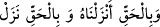

indirilmesini gerekli kılan hak ile birleşmiş olarak indirdik ve o da ancak içine aldığı
hak ile birleşmiş olarak indi. Her iki yerde de ‘hak’ ile kasdedilen birbirinden farklı
anlamlardır. İkincisi ilkinin te’kidi değildir.
Kâşifî şöyle der: “Tibyân’da şöyle der: “Hak” ile kasdedilen Muhammed (s.a.)’dir.
Yâni ‘Muhammed’e indi’ demektir.”
Medârik’te ise şöyle der: “Ahmed b. Ebi’l-Havârî der ki: Muhammed b. Semmâk
hasta oldu. Onun bevlini kâfir bir tabîbe götürüyordum. Yolda iyi yüzlü ve hoş kokulu
ve temiz elbise giyinmiş bir adamla karşılaştım. Bana nereye gittiğimi sordu, ben de
anlattım. “Sübhânallah, mühim bir işte Hak Teâlâ’nın dostu O’nun düşmanından yardım
istiyor!” dedi. Beni geri çevirdi. “İbn Semmâk’a söyle ki elini ağrı olan yere koysun ve:
“ Ve bi’l-hakkı enzelnâhu ve bi’l-hakkı nezel Biz Kur’ân’ı hak
olarak indirdik; o da hak ile indi” desin” dedi ve gözümden kayboldu. Geri döndüm.
Hikâyeyi şeyhe arz ettim. Şeyh elini ağrıyan yerine koydu, bu âyeti okudu ve derhal şifâ
buldu.” O kimsenin Hızır (a.s.) olduğu söylenir. Bu gibi hikmet eseri işler ilâhî
tabiblere mahsustur.”
et-Te’vîlâtü’n-Necmiyye’de şöyle der: “Kur’an’ın indirilmesi hak ile olmuştur, bâtıl
ile değil. Çünkü Allah Teâlâ mukaddes ruhları en güzel sûrette yarattı. Sonra nefha ile
(üfleyerek) aşağıların en aşağısı olan insan bedenine indirdi. İşte o zaman ruhlar
yücelerin en yücesi olan Hakk’ın yakınına ve civarına dönmek için tutunacak bir ipe
ihtiyaç duydu. Bunun üzerine Allah Teâlâ Kur’ân’ı indirdi. O, Allah’ın sağlam ipidir.
Allah: “Hep birlikte Allah’ın ipine sarılın.” (Âl-i İmrân, 3/103)” buyurdu.
O hak ile indi ki Allah yüce hikmeti gereği şakavet ehlini onun sebebiyle, onu
reddetmeleri, inkâr etmeleri ve ona sarılmaktan geri durmaları yüzünden saptırsın ve
onlar en alçakta kalsın. Yine saâdet ehli onu kabul, ona îmân, ona sarılmak ve onun
ahlâkıyla ahlâklanmak sûretiyle onun sâyesinde hidâyet bulup Hakk’a yakınlığın
kemâline ulaşsın ve Hakk’a sarılsın. Nitekim Allah Teâlâ: “Allah’a sımsıkı sarılın. O
sizin mevlânızdır.” (el-Hacc, 22/78)” buyurmuştur.”
“Seni de ancak” itâat edeni sevab ile “müjdeleyici ve” isyankâr olanı cezâya karşı
“uyarıcı olarak gönderdik.” Senin görevin ancak müjdelemek ve uyarmaktır.
et-Te’vîlâtü’n-Necmiyye’de şöyle der: “Saâdet ehlini Kur’an’a sarılındığında vuslat
mutluluğuyla ve irfan ile “müjdeleyici”, şakâvet ehlini ise Kur’ân’ın ipinden ayrılmak
ve ona sarılmayı terk etmek durumunda Hak’tan uzak olma, mahrumiyet ve ateşte ebedî
olarak kalma şekâveti ile “uyarıcı” olarak gönderdik.
Sülemî (k.s.) şöyle demiştir: “Bizden yüz çeviren, korkusundan bize yönelemeyenlere
müjde verir, yâni kötü ameller işleyenlere bizim rahmetimizin geniş, affımızın kemâl
üzere olduğu müjdesini verir ki yüzlerini bizim dergâhımıza çevirsinler.”
Ey Hâfız, O’nun rahmeti günahkârlar içindir
Ey dost, fâsıkları ümidsiz eyleme